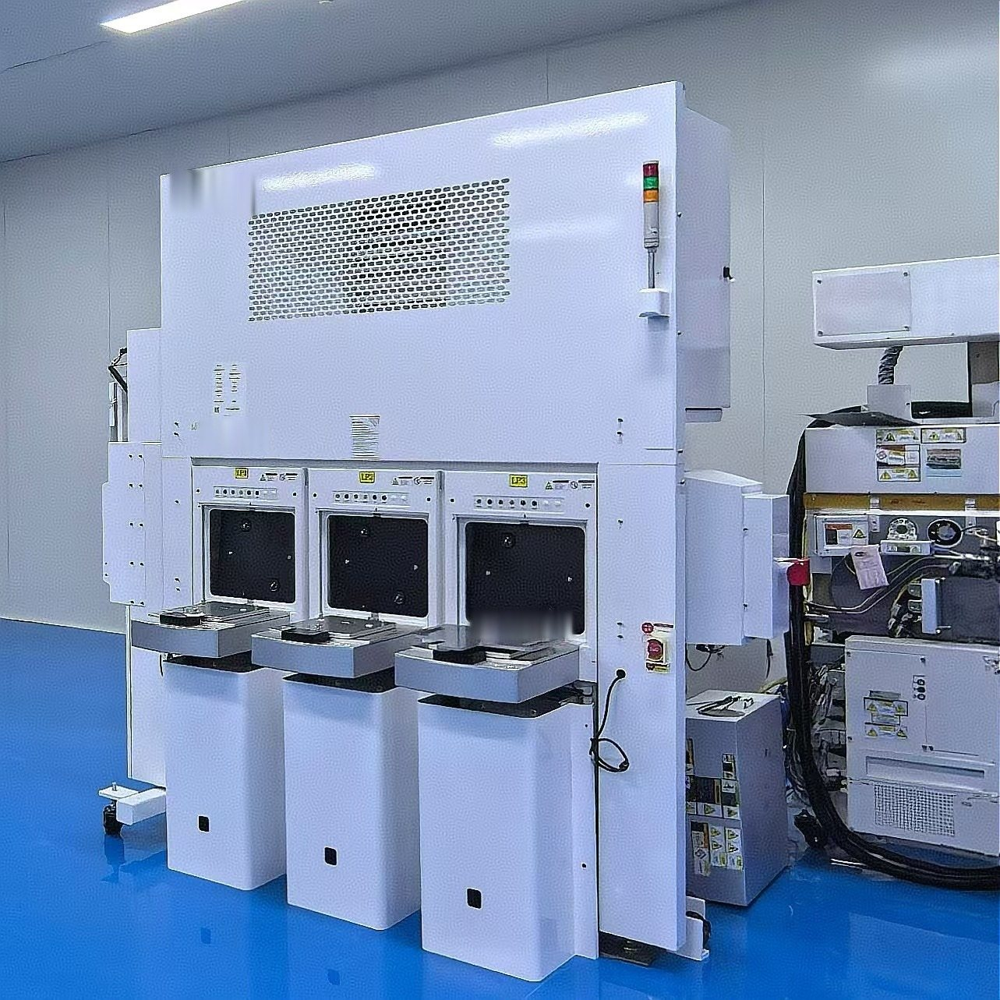
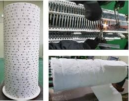
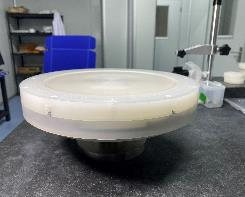

식각・웨트・퍼니스
건식 식각・웨트・퍼니스 ― 주요 OEM 대응.
AMAT・LAM・Mattson・TEL・Kokusai 장비의 설치・리퍼비시・수리・정기 보수・개조.
건식 식각・웨트・퍼니스
건식 식각・웨트・퍼니스 장비 서비스
주요 OEM 플랫폼의 설치・리퍼비시・수리・정기 보수・개조에 대응합니다.



건식 식각
- AMAT: eMAX · DPS G2 · Minos · Mesa · Sym3
- LAM: 컨덕터・유전체 식각
- 드라이 스트립: Mattson Suprema
- TEL: SCCM · 85 DD · DI · DS
챔버 부품: 젤 키트 · 캠 너트 · E-씰 · RF 스트랩
웨트
- LAM (SEZ) 매엽 세정: 101・102・201・203・223・323 / DV28・DV34・DV38・DVP
퍼니스 히터
- TEL 종형로: ALPHA-8S · 8SE · 303i / INDY · FORMULA
Kokusai・TEL 8 / 12인치 각 플랫폼 히터의 수리・리퍼비시・성능 업그레이드.
웨트 식각 ― 스핀 베이스 오버홀

- 분해・점검
- 수평・편심・동밸런스・저항 측정
- 수리・SOP 조립
- 표준・고온 SPM・후면 세정 각 타입
가시화 관리와 작업자 서명을 통해 전 공정을 기록·추적할 수 있습니다.